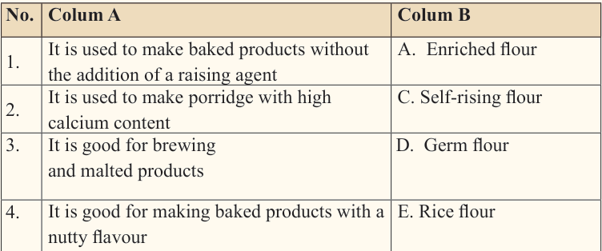
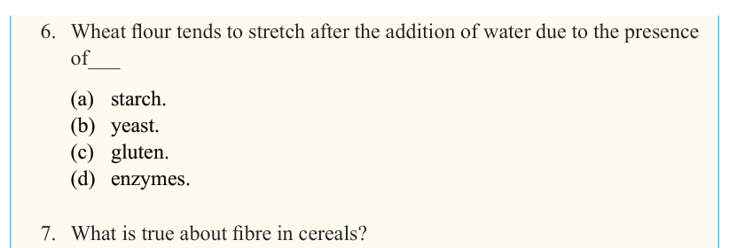

51


Food and Human Nutrition

Form Two
6. Wheat flour tends to stretch after the addition of water due to the presence of___
(a) starch.
(b) yeast.
(c) gluten.
(d) enzymes.
7. What is true about fibre in cereals?
(a) All cereals lack fibres; therefore, supplementary food is required.
(b) Fibre is present only in highly processed cereals.
(c) Cereals contain much fibre, especially when eaten as wholemeal.
(d) Fibre in cereals is destroyed during cooking.
8. One of the effects of milling process on rice is that it _____________
(a) adds all nutrients to flour.
(b) removes all nutrients permanently.
(c) removes some of the nutrients.
(d) does not affect the nutrient content.
Match the description of uses of flour in Column A with their corresponding type of flour in Column B.

No. Colum A
Colum B
1.
It is used to make baked products without the addition of a raising agent
A. Enriched flour
2.
It is used to make porridge with high calcium content
C. Self-rising flour
3.
It is good for brewing and malted products
D. Germ flour
4.
It is good for making baked products with a nutty flavour
E. Rice flour
F. Barley flour
G. Maize flour

17/09/2025 16:30